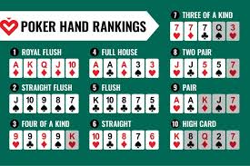
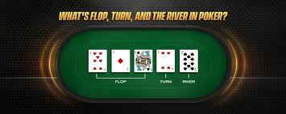
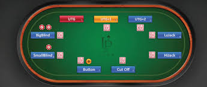

2 Poker Games, Structure, and Language
2.1 Motivating Example
2.1.1 A Single Hand, Played Well—and Lost
The opening scene of Rounders introduces poker not as spectacle, but as structure. In a smoky New York card room, a young law student named Mike McDermott (played by Matt Damon) sits across the table from Teddy KGB (played by John Malkovich), a feared and experienced underground poker boss. The game is Texas Hold’em.
As the hand unfolds, Mike narrates the basic mechanics of the game: each player receives two private cards; five community cards are revealed in stages; between these stages, players may bet, call, raise, or fold. The explanation is brief, accurate, and embedded directly in play. Viewers unfamiliar with poker are not asked to memorize rules—they are invited to watch a decision problem take shape.
After the first three community cards—the flop—are revealed, Mike holds the strongest possible hand given the information currently available. In poker terminology, he has the nuts. At this moment, no opponent can be ahead of him.
Mike now faces a strategic choice, but it is subtler than it first appears.
A small bet might invite calls from weaker hands. Yet against Teddy KGB, Mike knows that such a bet would not be interpreted innocently. A small wager, in this context, would signal a trap. Anticipating this, Teddy would likely respond cautiously, limiting the amount of money he commits to the pot.
Mike therefore does the opposite. He bets large on the flop—not to force Teddy out, but to disguise the true strength of his hand. The large bet is intended to look like overconfidence or a bluff, inducing Teddy to continue with hands that are currently inferior. The decision is not about the size of the bet alone; it is about how that bet will be interpreted by a sophisticated opponent.
The next community card—the turn—changes the situation. While Mike is still ahead, the range of hands that Teddy could plausibly hold has improved. Importantly, however, Mike’s earlier reasoning has not been invalidated. Given the information available at the time of the flop decision, betting large was still consistent with his objective: to extract value from worse hands while disguising his own.
On the final card—the river—the uncertainty resolves against Mike. Teddy completes a stronger hand. At this point, the remaining decision is no longer about inducing action, but about responding to a realized outcome. The final betting round ends with all the money in the pot. Mike loses the hand—and with it, his entire bankroll.
This loss is not the result of misunderstanding the rules. It is not the result of failing to anticipate his opponent’s reasoning. It is the result of randomness resolving unfavorably after a carefully chosen action in a strategic setting.
The full scene can be viewed here:
https://www.youtube.com/watch?v=YdYQyIJiOyU
This hand is not memorable because someone lost at poker. Loss is routine. It is memorable because the loss follows a decision that was informed, context-sensitive, and defensible. The outcome is disastrous; the reasoning is not.
The question raised by this first hand is not Why did Mike lose?
It is:
How should we judge decisions when losing is sometimes unavoidable?
This tension—between decision quality and realized outcome—is the central mathematical problem of poker. It is also a central problem in many domains beyond cards: investing, medicine, public policy, and everyday planning. Poker provides a rare environment in which the rules are explicit, the uncertainty is visible, and the consequences of chance are immediate.
Throughout this book, we will return to situations like this one. We will develop mathematical tools for evaluating decisions when outcomes are uncertain, distinguishing expectation from variance and sound reasoning from hindsight. Poker will serve not as a guide to winning money, but as a laboratory for understanding how rational decisions behave in an unpredictable world.
2.2 Mathematical Framework and Poker Theory
2.2.1 Roadmap
Poker is not a single game. It is a family of closely related games that share common elements—cards, betting, hidden information—but differ in how information is revealed, how bets are structured, and how success is measured. Before introducing mathematical tools for analyzing decisions in poker, we must first describe the structure of the environment in which those decisions are made.
This chapter establishes a shared language for the book. We will describe:
the basic components common to most poker games
the structure of a standard deck of cards
how hands are formed and ranked
how betting and information unfold over time
how different poker formats define different notions of “winning”
The goal is not to teach poker strategy. Rather, it is to specify the rules of the decision problem. Later chapters will introduce probability, expectation, and optimization, but those ideas only make sense once the underlying game and its outcomes have been clearly defined.
2.2.2 Core Concepts
2.2.2.1 Poker as a Structured Decision Environment
Poker is a game of incomplete information: at the moment a decision is made, relevant facts—most importantly, other players’ private cards—are unknown.
We begin by formalizing the basic components shared by all poker games.
Definition (Player).
A player is an individual participant who makes decisions during the game.
Definition (Private information).
Private information consists of facts known to one player but not to others, such as cards dealt face down.
Definition (Public information).
Public information consists of facts observable by all players, such as shared cards, betting actions, and the size of the pot.
Definition (Action).
An action is a permitted choice available to a player at a given moment, such as betting, calling, raising, or folding.
Definition (Game structure).
The structure of a poker game consists of:
the rules for dealing cards
the sequence of betting rounds
the actions available to players
the method for determining outcomes and payoffs
From a mathematical perspective, poker is a sequential decision problem in which players choose actions under uncertainty while accounting for the behavior of others.
2.2.2.2 The Deck of Cards
All poker games considered in this book are played using a standard deck of playing cards.
Definition (Deck of cards).
A standard deck consists of 52 distinct cards, formed by the combination of:
13 ranks: Ace, King, Queen, Jack, 10, 9, 8, 7, 6, 5, 4, 3, 2
4 suits: clubs, diamonds, hearts, spades
Each card is uniquely identified by its rank–suit pair.
The deck contains no jokers and no duplicate cards. Cards are dealt without replacement, so once a card is dealt, it cannot appear again within the same hand.
Mathematically, the deck provides a finite universe of equally well-defined outcomes, which allows us to model poker hands using combinatorics and probability.
Figure placeholder: Structure of a standard 52-card deck.
2.2.2.3 Hands and Sample Spaces
The central mathematical object in poker is the hand.
Definition (Hand).
A hand is a specified collection of cards drawn from the deck according to the rules of the poker variant being played.
For example:
In Texas Hold’em, a player ultimately forms a five-card hand using private and community cards.
In Seven-Card Stud, a player is dealt seven cards and the strongest five-card subset determines hand strength.
In Omaha, a hand is formed using exactly two private cards and three community cards.
From a probabilistic viewpoint, each possible hand corresponds to a distinct outcome of a random experiment.
Definition (Sample space).
The sample space, denoted by Ω, is the set of all possible hands that can occur under the rules of the game.
The precise meaning of Ωdepends on context. It may represent:
all possible five-card poker hands
all possible combinations of unseen cards at a given stage of play
all hands consistent with the public information currently available
At the beginning of a hand, the sample space Ωis large, reflecting substantial uncertainty. As cards are revealed, Ωis reduced: some outcomes become impossible, while others become certain.
This evolving sample space is one of poker’s defining features. Decisions are made before the final outcome is known, based on partial information about which elements of Ωremain plausible.
Later chapters will assign probabilities to subsets of Ωand use those probabilities to evaluate decisions mathematically.
2.2.2.4 Cards and Hand Rankings
Once a hand is complete, outcomes are compared using a fixed ranking system.
Definition (Hand ranking).
A hand ranking is an ordering of hands from strongest to weakest used to determine the winner at the end of play.
From strongest to weakest, the standard poker hand rankings are:
- Straight Flush (five cards of the same suit and in sequence)
- Four of a Kind
- Full House (three of a kind, and a pair)
- Flush (five cards of the same suit)
- Straight (five cards in rank sequence)
- Three of a Kind
- Two Pair
- One Pair
- High Card
These rankings define how realized outcomes are compared. They do not determine how decisions should be made during play, since decisions occur when only part of the sample space Ωis known.

2.2.2.5 Betting and the Flow of a Hand
Poker hands unfold through a sequence of betting rounds.
Definition (Betting round).
A betting round is a stage of the hand during which players act in turn until all remaining players have either matched the current bet or folded.
During a betting round, players may take one of the following actions:
bet: place chips into the pot
call: match an existing bet
raise: increase the size of the current bet
fold: withdraw from the hand, forfeiting any chips already committed
Bets simultaneously affect the size of the pot and the information available to other players.
Most poker games include forced bets at the start of each hand.
Definition (Blind).
A blind is a mandatory bet posted by designated players before cards are dealt.
Definition (Ante).
An ante is a small mandatory bet contributed by all players before the hand begins.
Forced bets ensure that every hand has value, preventing indefinite waiting.
2.2.2.6 Community Cards and Information Revelation
Many poker variants reveal information gradually through shared cards.
In Texas Hold’em, five community cards are revealed in stages:
Flop: the first three community cards
Turn: the fourth community card
River: the fifth and final community card
A betting round occurs between each stage.

Definition (Community card).
A community card is a card shared by all players and used by each to form a hand.
At any point in the hand, a player’s decision depends on:
private cards
visible community cards
observed betting behavior
2.2.2.7 Common Poker Variants
Different poker variants emphasize different structural features.
Texas Hold’em
Two private cards per player
Five community cards
Best five-card hand formed from any combination
Seven-Card Stud
Seven cards dealt per player
First two cards face down, third through 6th face up, seventh card face down.
No community cards
Omaha
Four private cards per player
Five community cards
Exactly two private cards and three community cards must be used
2.2.2.8 Cash Games and Tournament Poker
Poker is commonly played in two formats.
In cash games, chips correspond directly to money, and decisions are typically evaluated by long-run average gain or loss.
In tournament poker, chips determine survival and relative position, and losing all chips results in elimination. Chips do not have a fixed cash value.
Because the objectives differ, the same action may be reasonable in one format and inappropriate in the other.
2.2.2.9 Why Structure Comes First
Before we can count outcomes, compute probabilities, or evaluate expectations, we must first specify the sample space Ωand the rules that govern it.
Poker’s value as a mathematical laboratory lies in the clarity of its structure. Once the structure is fixed, mathematics can be applied. Without it, evaluation is meaningless.
A decision cannot be judged independently of the structure in which it is made.
2.2.3 Worked Examples: Hands as Evolving States
We now examine three worked examples—one each from Texas Hold’em, Omaha, and Seven-Card Stud. These examples are designed to illustrate how poker hands unfold structurally: how forced bets create an initial state, how action proceeds in order, how betting rounds end, and how information is revealed over time.
Throughout, we follow the perspective of Hero, while other players who continue in the hand are referred to as Villains.
2.2.3.1 Position Notation and Order of Action (8-Handed Tables)
Unless otherwise stated, we assume an 9-handed table. Positions are named relative to the dealer button (BTN), which determines the order of betting.
Before any cards are dealt, the button marks the nominal dealer position. The small blind (SB) sits immediately to the left of the button, and the big blind (BB) sits to the left of the small blind. In games with a big blind ante, the BB also posts the ante for the table.
Preflop betting begins with the player under the gun (UTG), the first seat to the left of the big blind, and proceeds clockwise around the table. After the flop, turn, and river, betting begins instead with the first remaining player to the left of the button, typically the small blind if still in the hand.
Acting later in a betting round means acting with more information about other players’ choices, which is why position plays such a central role in poker.

2.2.4 Worked Example 1: Texas Hold’em
Blinds, Big Blind Ante, and Betting Order
This example illustrates blinds, the big blind ante, and how betting order changes after the flop.
The game is no-limit Texas Hold’em. Stakes are $1 / $2 with a $2 big blind ante. Hero is seated in the cutoff (CO). The Villains who continue in the hand are on the button (BTN) and in the big blind (BB).
Before any cards are dealt, the small blind posts $1, the big blind posts $2, and the big blind also posts the $2 ante on behalf of the table. These forced bets create an initial pot before any voluntary action occurs.
Hero is dealt A♠ K♠.
Preflop.
Because preflop action begins to the left of the big blind, UTG acts first. Action proceeds clockwise. Players from UTG through HJ fold. When the action reaches Hero in the cutoff, Hero raises to $6. The button, acting next, calls. The small blind folds. The big blind, having already posted $2, calls the remaining $4. Preflop betting ends because all remaining players have matched the highest bet.
Flop.
The flop is dealt: K♦ 7♠ 3♣. From this point forward, betting begins with the first active player to the left of the button. The small blind has folded, so the big blind acts first. The big blind checks. Hero now acts and bets $8. The button calls. The big blind folds. The betting round ends once the remaining players have matched the bet.
Turn.
The turn card is revealed: 2♥. With only Hero and the button remaining, Hero acts first because Hero is out of position relative to the button. Hero bets $18. The button calls. Betting ends for the turn.
River.
The final card is revealed: 9♣. Hero again acts first and bets $35. The button folds. Because no call is made, the hand ends immediately without a showdown.
At each stage, the betting order is fixed by position, and the betting round ends when no further raises occur.
Poker shorthand.
$1/$2 NLH BBA | Hero CO A♠K♠ | Pre: folds, RFI, BTN/BB call | Flop K73r: BB x, Hero b, BTN c | Turn 2: Hero b, BTN c | River 9: Hero b, BTN f
2.2.5 Worked Example 2: Omaha
Betting Order with Multiple Players
This example emphasizes how betting order operates when several players remain in the hand.
The game is pot-limit Omaha with $1 / $2 blinds and a big blind ante. Hero is on the button. Villains who continue are in the hijack (HJ) and the big blind (BB). Hero is dealt A♣ K♣ Q♦ J♦.
Preflop.
Action begins UTG and proceeds clockwise. All players fold until the hijack, who calls $2. Hero calls on the button. The small blind folds. The big blind checks. Because all remaining players have matched the big blind, preflop betting ends.
Flop.
The flop is T♣ 9♠ 3♦. Postflop betting begins with the first active player to the left of the button, which is the big blind. The big blind checks. The hijack bets $6. Hero, acting last, calls. The big blind folds. The betting round ends.
Turn.
The turn card is 2♣. With two players remaining, the hijack acts first and bets $18. Hero calls. Betting ends for the turn.
River.
The river card is 8♥. The hijack again acts first and bets $30. Hero calls. Because the bet is called, the hand proceeds to showdown.
Hero forms a straight using Q♦ J♦ from hand together with T♣ 9♠ 8♥ from the board, as required by Omaha rules. The Villain shows two pair. Hero wins.
Poker shorthand.
$1/$2 PLO BBA | Hero BTN AKQJds | Pre: HJ limp, Hero call, BB check | Flop T93: BB x, HJ b, Hero c | Turn 2: HJ b, Hero c | River 8: HJ b, Hero c | Hero wins
2.2.6 Worked Example 3: Seven-Card Stud
Antes, Bring-In, and Dynamic Order
This example illustrates how betting order in Seven-Card Stud depends on visible cards rather than fixed positions.
The game is seven-card stud with a $1 ante and $2 / $4 betting limits. All players post the ante before cards are dealt. Each player receives two face-down cards and one face-up card.
Hero’s cards are (A♠ A♦) K♣, with the king face up. One Villain remains through the hand. The Villain’s upcard is 4♥, the lowest visible card, so the Villain is required to post the bring-in.
Third Street.
The Villain posts the $1 bring-in. Action proceeds clockwise from the bring-in. Hero completes to $2. All other players fold. The Villain calls. Betting ends.
Fourth Street.
Each remaining player receives one face-up card. Hero receives Q♠. The Villain receives 9♦. On this street and all subsequent streets, the player showing the highest hand acts first. Hero now shows the strongest visible hand and bets $2. The Villain calls.
Fifth Street.
Each player receives another face-up card. Hero receives 2♣. The Villain receives J♠. Betting limits increase on this street. Hero still shows the strongest hand and bets $4. The Villain calls.
Sixth Street.
Each player receives a final face-up card. Hero receives 7♥. The Villain receives T♣. Hero again acts first and bets $4. The Villain folds, ending the hand.
In stud, betting order is recalculated on each street based on visible cards, and information is revealed asymmetrically rather than through shared cards.
Poker shorthand.
$1 ante Stud | Hero (A♠A♦)K♣ | 3rd: Villain brings, Hero completes | 4th: Hero b, Villain c | 5th: Hero b, Villain c | 6th: Hero b, Villain f
2.3 Beyond Poker
The structural features introduced in this chapter—partial information, sequential decisions, and the distinction between decision quality and realized outcomes—are not unique to poker. Poker is valuable as a mathematical laboratory precisely because these features are explicit and visible. Outside of poker, the same structures appear, but often without clear boundaries or agreed-upon rules.
Two such settings are especially instructive: decision-making under partial information, and the evaluation of decisions when outcomes are noisy.
2.3.1 Sequential Decisions Under Partial Information
In poker, players act before all cards are revealed. At the moment a bet is made on the flop, the turn and river are unknown. The decision is therefore based not on a single outcome, but on a set of possible futures. As community cards are revealed, that set shrinks, but it never disappears until the hand ends.
This structure appears in many real-world decision environments.
Consider medical diagnosis. A physician does not begin with a complete picture of a patient’s condition. Initial symptoms constrain the set of plausible diagnoses, but rarely identify a single cause. Each test result—blood work, imaging, or response to treatment—functions like a revealed card in poker. Some possibilities are eliminated; others remain viable. Crucially, decisions must be made before all tests are complete: whether to begin treatment, order further testing, or wait. Acting too early carries risk; acting too late may also be harmful.
From a mathematical perspective, the physician is operating within a sample space of possible conditions and updating that space as information arrives. The structure of the problem—not the specific medical details—determines what constitutes a reasonable decision at each stage.
A similar structure governs many legal and political decision processes, particularly those shaped by procedural order.
In legislative bodies and courts, decisions are rarely made with full information. New evidence emerges, testimony unfolds, amendments are proposed, and political constraints shift over time. Yet procedural rules determine when actors must commit to positions. Agenda-setting rules decide which proposals are considered first, which may be amended, and which may never reach a vote at all.
These rules function like position and betting order in poker. Early movers commit with limited information but shape the path of subsequent decisions. Later actors benefit from observing earlier actions but are constrained by what has already been placed on the table. The outcome of a vote or ruling may hinge less on preferences than on the order in which options are considered.
Here again, the mathematics lies in the structure: sequential decisions under partial information, shaped by rules that fix who acts when and with what knowledge.
2.3.2 Decision Quality Versus Outcome
One of the most persistent errors in reasoning about uncertainty is judging decisions solely by their outcomes. Poker makes this error visible. A player may make a mathematically sound decision—one that is favorable given the available information—and still lose the hand. Conversely, a poor decision may occasionally succeed.
This distinction between decision quality and outcome quality extends far beyond poker.
In finance, an investor may construct a diversified portfolio based on sound reasoning and still experience losses during a market downturn. Another investor may concentrate wealth in a single asset and enjoy a short-term gain. Evaluating these decisions based only on realized returns confuses luck with judgment. Over short horizons, outcomes are dominated by randomness; over longer horizons, the quality of the underlying decision process becomes visible.
Sports analytics offers a parallel example. In American football, fourth-down decisions are increasingly evaluated using probabilistic models. These models often recommend aggressive choices—going for a conversion rather than punting—that increase the probability of winning on average. Any single attempt, however, may fail. When it does, the decision is often criticized, even if the same choice would have been praised had it succeeded. The evaluation shifts with the outcome, not with the reasoning.
Poker trains the opposite habit. Because losses are frequent and unavoidable, players who persist must learn to separate reasoning from results. This separation is not psychological resilience; it is mathematical necessity. Without it, learning collapses. A player who revises strategy every time a good decision loses will never converge toward sound play.
The same principle applies in medicine, law, public policy, and everyday planning. Policies judged by immediate effects invite overreaction. Legal strategies evaluated by single verdicts obscure systemic reasoning. Plans abandoned after a single failure reflect confusion between noise and signal.
Poker does not eliminate uncertainty. What it offers instead is clarity. The rules are fixed, the information structure is explicit, and the role of chance is visible. This clarity allows us to study, in its simplest form, a central mathematical problem:
How should decisions be evaluated when outcomes are uncertain, irreversible, and only partially informative?
That question, not the cards themselves, is what connects poker to the wider world.
2.5 Homework Problems
Homework Problems
Explain what it means for poker to be a game of incomplete information and identify one piece of private information and one piece of public information in a Texas Hold’em hand.
In Seven-Card Stud, which cards are private and which are public on Third Street, and how does this differ from Texas Hold’em?
Describe the difference between a decision and an outcome in poker and give one example of each from any poker variant.
Explain why a poker hand should be modeled as a sequence of decisions rather than as a single random draw from a deck.
A player says, “I lost the hand, so my decision must have been bad.” Explain why this reasoning is mathematically flawed.
At an 9-handed Texas Hold’em table, list the order of action preflop starting with UTG and explain why the order of action changes after the flop.
In an 9-handed Hold’em game, the small blind folds preflop but the big blind remains; who acts first on the flop and why?
Explain the purpose of blinds and antes in poker and describe what structural problem would arise if a poker game had no forced bets.
In Seven-Card Stud, what determines who acts first on Fourth Street and how does this differ from Hold’em?
On Fourth Street in a stud hand, Hero shows K♣ Q♠ while a Villain shows A♦ 7♥; who acts first on that street and why?
In Texas Hold’em, the board is A♠ K♠ 9♦ 4♣ 2♥, Hero holds Q♠ J♠, and Villain holds A♦ 9♣; determine the winner and explain how each best five-card hand is formed.
Using the same board as in Problem 11, suppose Hero instead holds 8♠ 7♠; does Hero have a flush and why or why not?
In Texas Hold’em, the board is T♣ T♦ 6♠ 3♠ 3♥, Hero holds A♠ K♠, and Villain holds 6♦ 6♣; identify each hand and determine the winner.
Explain why a player can have a very strong hand before the flop in Hold’em and still lose by the river even if no mistakes are made.
In Omaha, the board is K♠ Q♠ J♦ 9♣ 2♥, Hero holds A♠ T♠ 4♦ 4♣, and Villain holds A♦ K♦ Q♣ J♣; determine the winner and explicitly state which cards each player must use.
Using the same board as in Problem 15, explain why Hero cannot use three spades from hand to make a flush.
In Omaha, the board is 9♥ 8♥ 7♣ 2♦ K♠ and Hero holds T♥ 6♥ A♦ A♣; determine whether Hero has a straight, a flush, both, or neither and explain.
Reinterpret the cards from Problem 17 as a Texas Hold’em hand instead of Omaha and explain how the evaluation changes.
19.In Seven-Card Stud, Hero’s cards are (A♠ A♦) K♣ Q♠ 7♥ 2♣ 9♦; identify Hero’s final five-card hand.
In the same stud hand, Villain’s cards are (K♥ K♦) Q♣ J♣ T♠ 9♠ 2♦; compare the hands and determine the winner.
On Fifth Street in Seven-Card Stud, Hero shows A♠ K♣ Q♠ while a Villain shows J♣ T♠ 9♠; who acts first on that street and why?
Explain how public upcards in Seven-Card Stud reduce uncertainty differently than community cards do in Texas Hold’em.
Explain why the rule “exactly two private cards and three community cards” in Omaha restricts the set of possible hands compared to Hold’em.
Give an example of a hand that would be strong in Texas Hold’em but weaker or impossible in Omaha and explain why.
In Seven-Card Stud, betting limits typically increase on Fifth Street; explain how this rule reflects the structure of information revelation.
Describe a Texas Hold’em situation in which a player is far ahead on the flop but loses by the river and explain why this does not imply the earlier decision was incorrect.
Give an example of a poker decision that appears successful based on outcome alone but may be poorly reasoned when examined structurally.
Explain how the structure of a poker hand makes it possible to separate luck from reasoning more clearly than in many real-world decision problems.
In one paragraph, explain why learning to correctly read hands and determine betting order is a necessary prerequisite for doing mathematics with poker.
2.6 Extension Activity
2.6.1 One Hand, Many Games
Throughout this chapter, we have emphasized that poker decisions cannot be evaluated without first specifying what a player is trying to optimize. Different players may approach the same hand with different goals, values, and interpretations of what the game is for. As a result, rational players can behave very differently—even when they face the same cards and the same rules.
In this activity, you will construct and analyze a single Texas Hold’em hand in which players bring distinct perspectives to the table.
2.6.2 Part I: Constructing the Hand
Create a complete Texas Hold’em hand played at an eight-handed table. Clearly identify all player positions from UTG through the button, including the small blind and big blind. Specify the blind structure, and indicate whether the game includes a big blind ante.
Assign hole cards to Hero and to at least two Villains. Then describe the hand as it unfolds, street by street, including preflop, flop, turn, and river. On each street, describe the betting actions taken by the players who remain in the hand. Your hand should end either with a fold before showdown or with a showdown in which a winner is clearly determined.
The hand does not need to reflect optimal poker strategy, but it must be internally consistent with the rules of Texas Hold’em.
2.6.3 Part II: Assigning Perspectives
Assign each active player in your hand a distinct perspective on what matters in the game. These perspectives should shape how players interpret risk, information, and success.
For example, one player might be focused primarily on long-run profit, evaluating decisions by average gain rather than short-term results. Another might prioritize survival, treating chips as a scarce resource and avoiding actions that risk elimination. A third player might be concerned with reputation or signaling, choosing actions partly to influence how others perceive them. Other players might treat the game as a social or communal activity, value boldness or resolve as a matter of honor, focus on gathering information rather than winning the pot, or strongly minimize risk in favor of predictability. Some players may judge decisions almost entirely by outcomes, treating wins as validation and losses as failure.
You may invent alternative perspectives, including ones grounded in cultural, institutional, or personal values, as long as each perspective is clearly stated and applied consistently throughout the hand.
2.6.4 Part III: Explaining the Actions
Recount the hand from start to finish, explaining each player’s actions from that player’s own perspective. At each major decision point, describe what information the player had at the time, what constraints they faced—such as position, prior bets, or stack size—and how their perspective shaped the action they chose.
Different players may interpret the same bet or card very differently. Make these differences explicit in your explanation, and be clear about how a player’s reasoning follows from their stated viewpoint.
2.6.5 Part IV: Interpreting the Outcome
After the hand concludes, step outside the action and reflect on how the players might view one another.
Discuss how each player might evaluate their own decisions regardless of the outcome. Consider how players might interpret their opponents’ actions or intentions, and identify disagreements that arise not from different facts, but from different views of what the game is. You do not need to decide who played “correctly.” Instead, focus on how different framings lead to different judgments about the same sequence of events.
2.6.6 Submission Guidelines
Your submission should be approximately two to three pages and written in clear, well-organized prose. You may use diagrams or poker shorthand if helpful, but clarity of explanation is more important than technical detail.
This activity is not about finding the best play. It is about understanding how rules, information, and values interact to shape decisions—and how mathematical analysis depends on making those elements explicit.